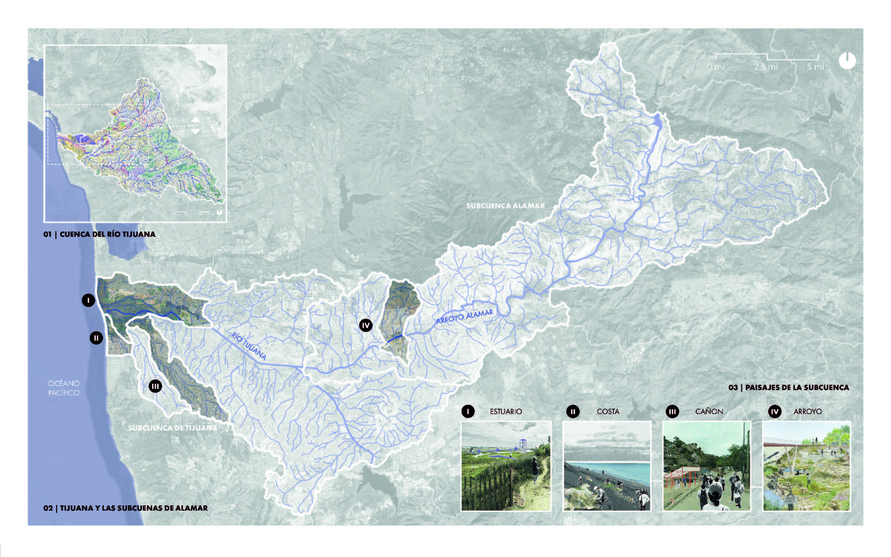
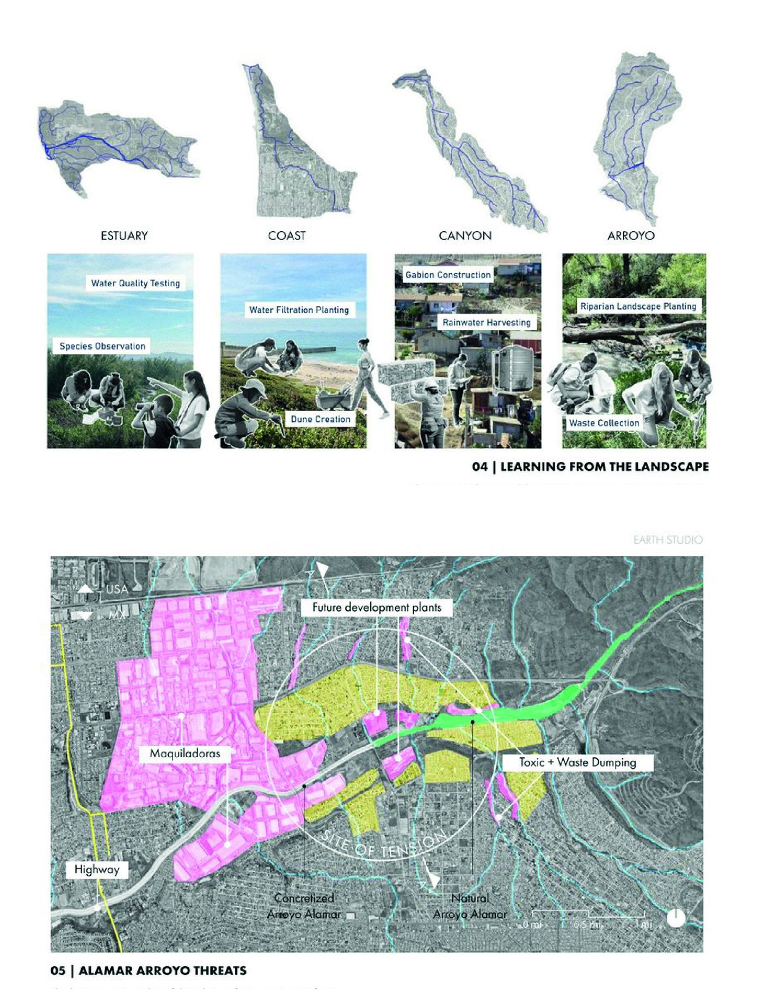
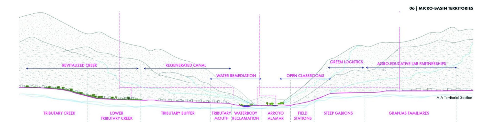
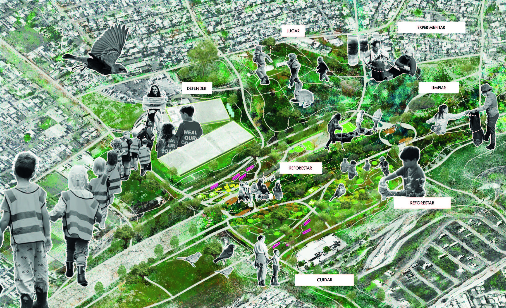
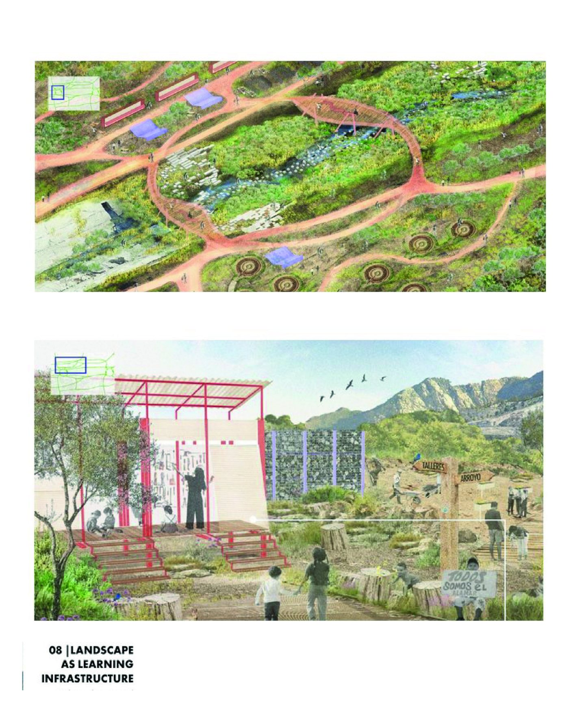
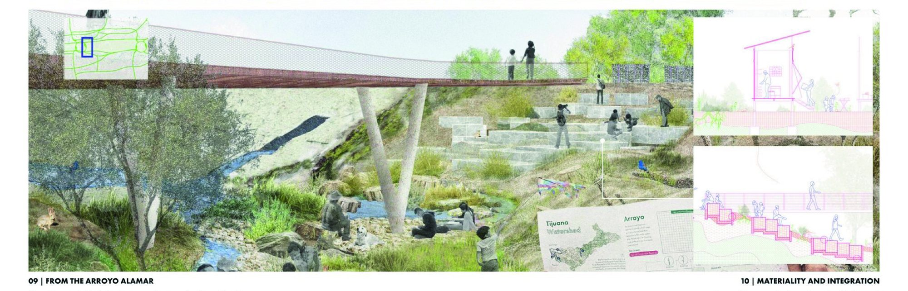

Arroyo · Cuenca del Río Tijuana, EE.UU. / México
La educación ambiental como una apertura hacia la conciencia
Explorar el proyecto ↓¿Y si la naturaleza fuera nuestra aula?
La Cuenca Enseña es un aula de paisaje binacional entre San Diego y Tijuana, donde la educación y la comunidad son las herramientas para preservar, conectar y activar las ecologías únicas de la cuenca del Río Tijuana. Situada en la costa, el cañón, el estuario y el arroyo, esta red de escuelas de paisaje conecta la educación pública, las iniciativas de organizaciones civiles y las agencias de gobierno a través del cuidado compartido y la programación pública.
Amenazado por el desarrollo de maquiladoras, la expansión de autopistas y la concretización del río, el Arroyo Alamar exige protección y defensa — y es aquí donde empieza nuestra primera intervención.

El agua fluye a través de fronteras, conectando paisajes diversos. Al entender la cuenca a esta escala, replanteamos la región desde la ecología en vez de la política.
Cuatro ecosistemas distintos se convierten en aula: estuario, costa, cañón y arroyo. Este marco de colaboración binacional está enraizado en la hidrología, no en las fronteras.

La educación y el cuidado posicionan a las comunidades como socias. Los programas de campo y el monitoreo ecológico tienden puentes a través del paisaje binacional.
05El último corredor verde del Alamar enfrenta la extinción por la expansión de maquiladoras y la construcción de autopistas. Esta urgencia ecológica impulsa el proyecto de reparación.

Escuelas locales y organizaciones comunitarias conectan ambos lados del arroyo. Juntas, se convierten en la base del cambio.

Cada sitio se convierte en un maestro a través de sus propios desafíos. Los programas educativos catalizan tres estrategias: regenerar la hidrología, conectar comunidades y activar paisajes.

Donde el arroyo natural se encuentra con el canal de concreto surge una nueva relación entre paisaje e infraestructura: un espacio para la restauración, la conexión y el acceso al agua. Las intervenciones, como estaciones de campo, se convierten en un espacio de aprendizaje — cómo reciclar, cómo construir y cómo trabajar con materiales recuperados.

Los escalones invitan a las personas hacia el paisaje, creando espacio para el juego y el aprendizaje. La reparación se convierte en un acto de cuidado a través de la gestión comunitaria.
El rigor estructural se encuentra con la integración del paisaje. Pabellones y sistemas de suelo están diseñados para funcionar juntos con intención.